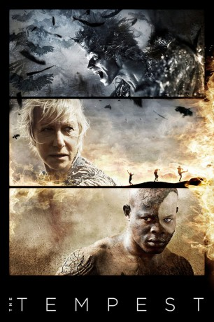

#9855 The Tempest - Der Sturm
Alternativ: The Tempest
Auszeichnungen: für 1 Oscars nominiert
 
 IMDB-Wertung: 5.4 / 10
IMDB-Wertung: 5.4 / 10  Metascore: 43
Metascore: 43 
In dieser Verfilmung von William Shakespeares “Der Sturm” steht die Zaubererin Prospera im Mittelpunkt (im Original ein männlicher Zauberer, Prospero). Im Mittelalter wurden Frauen, die magische Künste und Alchemie ausübten, der Hexerei beschuldigt. Prospera wird von ihrem Bruder vertrieben und gelangt mit ihrer kleinen Tochter auf einem kaum seetüchtigen Boot auf eine Insel. Dort kommt es zu einem Machtkampf zwischen Prospera und dem entstellten Hexensohn Caliban.
Jahr: 2010
Dauer: 111 Minuten
FSK: 16
Land: USA Studio: Touchstone PicturesTonspuren: DTS - ,
Untertitel:
Auflösung: 1080p (1920x816) Größe: 8314 MB
Genre: Drama, Komödie, Fantasy, Liebe
Regisseur:  Julie Taymor
Julie Taymor
Drehbuch: Julie Taymor, William Shakespeare
Soundtrack: Elliot Goldenthal
Darsteller:
Datei: X:\2010(N-Z)\Tempest - Der Sturm, The (2010, FSK16, 1920x816).mkv seit 02.11.2018
Festplatte: HD 2010(G-Z)-2011(A-F)
 Es gibt insgesamt 115 Filme in der Gruppe '2010(N-Z)'
Es gibt insgesamt 115 Filme in der Gruppe '2010(N-Z)'